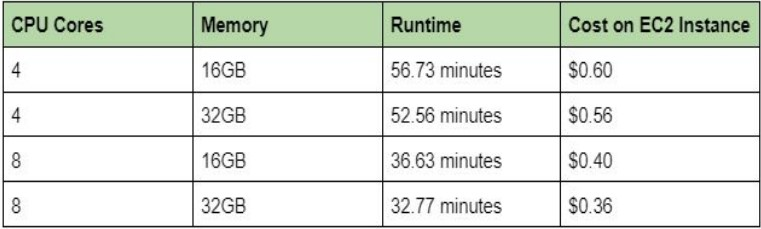
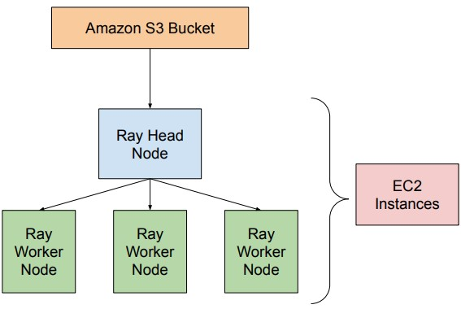

What Tools Are We Using For Parallelism?
In order to maximize the available computational resources and increase the end-to-end runitme and performance of our pipeline, we mainly used Dask and Ray. We primarily used dask as a pandas replacement, in order to attain faster and more efficient data processing at various stages of our pipeline, since dask is a parallelized framework. Additionally, we used the Ray Core API at different throughout our pipeline to speed up code that was The ray core changes will likely be more apparent with larger computational workloads and resourcees available. We are currently exploring the Ray Tune API in order to implement distributed hyperparameter tuning for our pipeline. Distributed hyperparemeter tuning would help immensley with our model's training time, as it can parallelize the hyperparameter-tuning process. This would enable us to not only to achieve a faster runtime, but it would also allow us to potentially feed in larger datasets for our model to train on, which could lead to benefits in terms of model performance.
Scaling With AWS
We intially planned on scaling our pipeline with AWS. Specificlaly, we would be deploying a cluster of AWS-EC2 Spot instances, and use Ray's provided API to create a ray cluster. This would allow us to scale our pipeline across various nodes, which would increase our runtime dramatically. However, due to logistical setbacks, we were unable recieve access to . However, scaling with AWS is likely quite simple and would require minimal changes to our current pipeline thanks to Ray's simple and robust API. As a result, we would like to eventually deploy our workload on AWS in the future. Of course, one important consideration with pivoting to AWS is cost. We are planning to use EC2 instances, and a table showing rough cost and performance metrics of an EC2 instance is shown below.
From the table above, we can see the estimated costs for running RiskNet on various sized nodes on AWS are relatively small. However, it is important to note that the largest recorded node size is almost half the cost of the smallest node size. When we scale up our model with more worker nodes, it will be more cost effective to use the larger node sizes than the smaller nodes because the overall runtime will be faster per node.
Next Steps
In the future, we plan on further scaling our pipeline with AWS. Specifically, we would like to utilze the AWS S3 Bucket for storing the data for our pipeline, and we deploy our workload across a ray cluster on AWS EC2 Instances. A visualization of this architecture is shown below. 